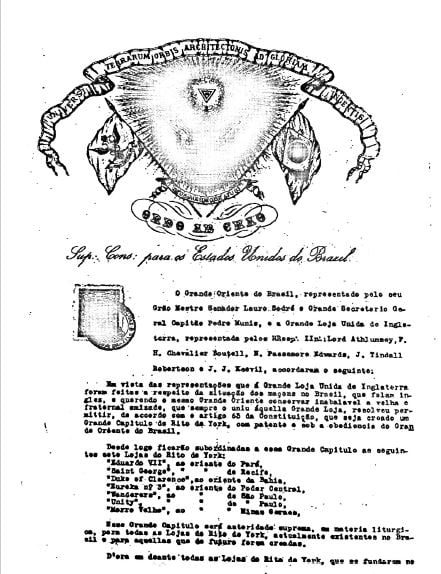

Nossa História — O Rito de York no GOB
A origem do nome, a trajetória dos maçons ingleses no Brasil e a convenção de 1912 que definiram o Rito que praticamos.
Um nome antigo
A expressão "Rito de York", usada em muitos países para se referir aos trabalhos ritualísticos maçônicos na linha britânica, é de uso corrente no Brasil desde o surgimento da própria maçonaria no país. Uma das mais antigas referências no Brasil pode ser encontrada no periódico maçônico "O Sete D'Abril", publicado no Rio de Janeiro em 7 de julho de 1835, que cita: "Em Inglaterra, debaixo do Rito de York, temos outro exemplo (...)". Ou seja, pelo menos desde 1835 já se usava no Brasil o nome "Rito de York" para os trabalhos do craft inglês.
Os maçons ingleses no Brasil
Os maçons ingleses participam da história da maçonaria brasileira desde sua fundação. A Loja Commercio e Artes na Idade D'Ouro, que fundou o Grande Oriente do Brasil em 1822, tinha entre seus membros o maçom inglês Joseph Ewbank, iniciado em Londres em 1810. Em novembro de 1833, sete maçons ingleses peticionaram à Grande Loja Unida da Inglaterra (GLUI) uma Carta Constitutiva para a Orphan Lodge (Loja Órfã), recebida em 1834. Duas outras Lojas inglesas seguiram o mesmo caminho: a St. John's Lodge, no Rio, em 1839, e a Southern Cross Lodge, em Recife, em 1856. O que na Inglaterra se chama "Craft Masonry", no Brasil passou a se chamar Rito de York.
Estas três Lojas não tiveram vida longa — tiveram seus registros cancelados junto à GLUI em 1862 — mas marcaram oficialmente o contato do Brasil com o sistema ritualístico inglês. Tentativas posteriores de novas Cartas foram negadas pela GLUI, que respondeu em 1865:
"É regra estabelecida pelo Grão-Mestre da Inglaterra de nunca conceder uma Carta Constitutiva para uma Loja reunir-se em um país onde esteja operando uma Grande Loja distinta. Esse é o caso do Rio de Janeiro, que creio estar sob a jurisdição do Grande Oriente do Brasil."
O reconhecimento oficial do Grande Oriente do Brasil pela GLUI se daria apenas em 1880.
A convenção de 1912
O Grande Oriente do Brasil, diferente da Inglaterra, Irlanda, Escócia e EUA, administra mais de um sistema litúrgico dentro do que chamamos "simbolismo". Por isso, foi necessário nominar o trabalho ritualístico inspirado no Craft inglês como "Rito" no GOB — o que aconteceu em 1912, sob o Soberano Irmão Lauro Sodré, então Grão-Mestre do GOB.
Para existir um Rito no Brasil, era necessária a existência de um "Corpo Filosófico de Graus Superiores", como nos Ritos Escocês Antigo e Aceito, Moderno e Adonhiramita. No documento assinado por Lauro Sodré, consta (em português atual):
"Esse Grande Capítulo será autoridade suprema, em matéria litúrgica, para todas as Lojas do Rito de York atualmente existentes no Brasil e para aquelas que no futuro forem criadas. (...) O Grande Capítulo se comporá de 33 membros efetivos, dos quais 28 serão eleitos dentre os maçons pertencentes às Oficinas do Rito e 5 serão o Grão-Mestre do Grande Oriente do Brasil, o Grão-Mestre Adjunto, o Grande Secretário Geral da Ordem, o Grande Tesoureiro e o Grande Chanceler."
Este episódio foi único nas histórias do GOB e da GLUI: maçons ingleses fundaram Lojas inglesas no Brasil, sob jurisdição do GOB e com aprovação da GLUI, o que estreitou os laços entre as duas obediências. O nome "Rito de York" é uma lembrança constante desta amizade.
Rito de York x Arco Real
O Sagrado Arco Real (Holy Royal Arch) é considerado uma extensão do simbolismo pela GLUI desde o Tratado de União de 1813, que declara a Maçonaria constituída de três graus "incluindo a Ordem do Sagrado Arco Real". Ainda assim, o Grande Capítulo do Rito de York no GOB nunca administrou o Arco Real — restringiu-se aos três graus simbólicos e à Cerimônia de Instalação na Cadeira.
Uma confusão comum
Há quem confunda o nosso Rito de York com o "York Rite" americano, um sistema de dez graus praticado nos EUA após o grau de Mestre Maçom. Mas nos EUA, o que chamamos de "Simbolismo" no Brasil é chamado de "Blue Lodge" ou "Craft" — sem relação de nome com o York Rite. Existe ainda outro sistema americano, o "Antient and Accepted Scottish Rite" (30 graus), homônimo do nosso Rito Escocês Antigo e Aceito. Assim como ninguém confunde este com nossos graus simbólicos, não há razão para confundir o York Rite americano com nosso Rito de York.
Do tratado de hoje
O tratado de 1912 atendeu ao anseio dos maçons ingleses de praticar um ritual familiar. Por décadas, o Rito de York cresceu pouco, e somente a partir de 2003, com as Ordens Laterais inglesas sob jurisdição brasileira, maçons brasileiros passaram a se interessar mais — de poucas dezenas de Lojas para mais de uma centena hoje. O Rito é baseado no Emulation Ritual, praticado pela Emulation Lodge of Improvement for Master Masons (ELoI), referência mundial das cerimônias aprovadas pela GLUI em 1816, adequado à Constituição do GOB.
No Brasil, dada a multiplicidade de ritos praticados, foi necessário adotar um nome — e a convenção ocorreu em 1912 com "Rito de York", mantida até hoje.
Cópia do Tratado de 1912
A "Certidão de Nascimento" do Rito de York no GOB

Foi por intermédio do ato do Soberano Irmão Lauro Sodré, Grão-Mestre Geral do Grande Oriente do Brasil em 21 de dezembro de 1912 que nasceu o Rito de York na nossa Potência Maçônica. O documento original encontra-se na Biblioteca do GOB, em Brasília – DF.